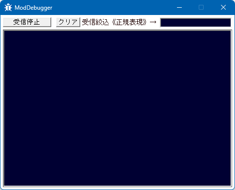

ModDebuggerは、いわば、デバッグ情報の受信機です。
Mod開発者、Mod改変者用の支援アプリケーションであり、
Modを作る人、編集する人にとって、デバッグがかなりやりやすくなるツールとなっています。

将星録はWindowsゲームですので、カスタム.modも必然的にWindowsプログラムです。
Windowsプログラムでは、通常値を出力する「コンソール部」がありませんので、
デバッグ・値の監視などがやりにくい、という問題があります。
特に将星録はVisual Studioで｢ブレイク｣といった｢プログラムが一時停止を伴うようなこと」をすると、
不正終了してしまいますので、一層デバッグがやりにいという実情があります。
このModDebuggerはそのような問題を解決するためのツールです。
Modが出力するデバッグ出力を、リアルタイムに表示することが可能です。
ModDebugger.zipを解凍し、ModDebugger.exe を｢将星録フォルダ ( Nobunaga7WPK.exe や 将星録.mod.dll がある場所)｣に置いてください。
特にこの場所にある必要性はありませんが、将星録modが導入されていれば、
メニューの改造メニューの「デバッガ起動」からでもこのModDebugger.exeを起動することが出来ます。
このツールは、汎用的なコンソール風味のアプリケーションであり、
基本的には、将星録そのものに依存しません。
しかし、信長の野望の以下のシリーズに対して、特別に、以下の様にに最適化されています。
これらのいずれかのゲームが立ち上がっていると、そのデバッグ出力を監視するように、自動的にそのゲームを対象としたものに切り替わります。
(対象はOutputDebugString系 / System.Diagnostics.Trace.WriteLine系 / System.Diagnostics.Debug.WriteLine系)
この際は、該当ゲームの｢デバッグモニター監視ツール｣になります。 この間、他の一般アプリケーションの情報は拾いません。
上記ゲームが立ち上がって｢いない｣間は、Microsoftが提供する、DebugView for Windows と
似たような挙動を実現します。
Windows上で実行されている全てのアプリケーションに対して、
そのデバッグ出力を監視します。
(対象はOutputDebugString系 / System.Diagnostics.Trace.WriteLine系 / System.Diagnostics.Debug.WriteLine系)